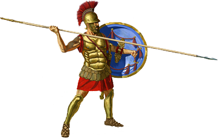
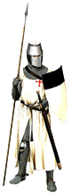
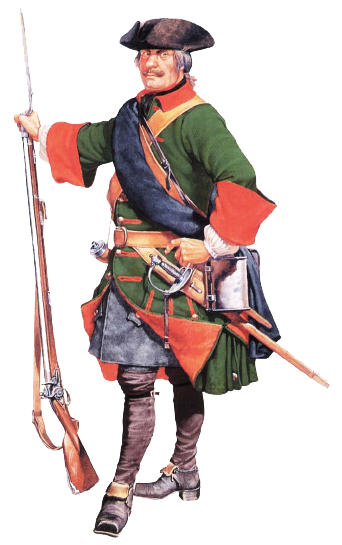
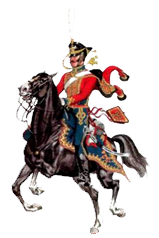
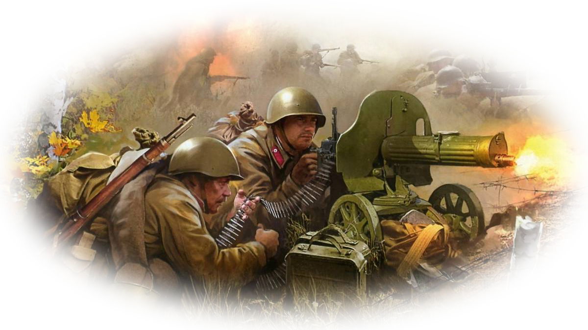
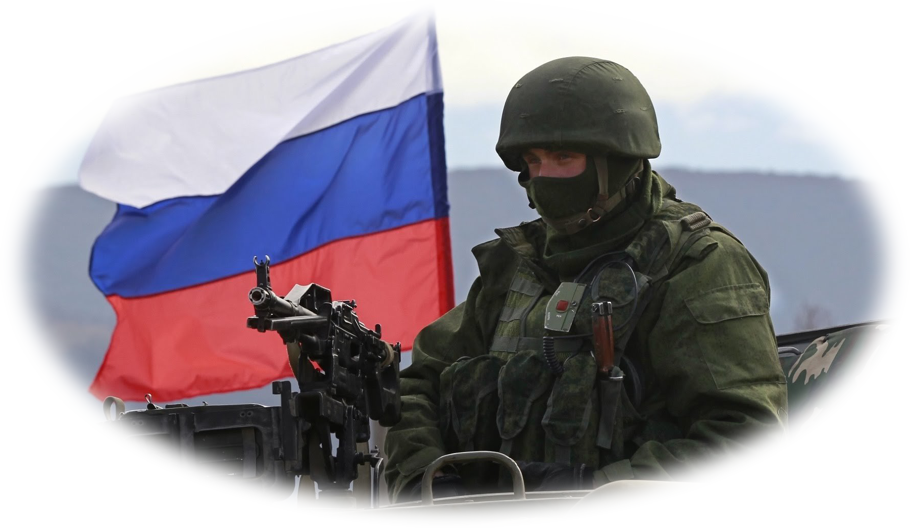

Меню
Главная
О предмете
Руководящие документы
Квалификационные требования
Учебная программа
Тематический план
Содержание дисциплины
Альбом схем
Глоссарий
Видео
Тесты и задания
Аннотация
Рабочая тетрадь
Полководцы
Характеристики вооружения
Определения, термины, понятия
Сокращения
Условные обозначения
Тема №1
Тема №2
Тема №3
Тема №4
Тема №5
Тема №6
Зачет
Тема №1
Военное искусство рабовладельческого общества (VI в. до н.э. - V в. н.э.)
Занятие 1. Возникновение военного искусства рабовладельческого общества ( VI - V вв.)
Занятие 2. Особенности военного искусства Древней Грециии и Древнего Рима
Занятие 3. (Семинар №1) Основные черты военного искусства рабовладельческого общества

Тема №2
Военное искусство феодального общества ( IХ - ХVII вв.)
Занятие 1. Основы военного искусства IХ - ХIV вв.
Занятие 2. Общая характеристика русского военного искусства в ХV - ХVII вв.
Занятие 3. (Семинар №2) Основные черты военного искусства в период образования и укрепления русского централизованного государства и в борьбе против иноземных захватчиков

Тема №3
Основные черты русского военного искусства ХVIII в.
Занятие 1. Общая характеристика русского военного искусства в первой половине ХVIII вв.
Занятие 2. "Наука побеждать" А.В. Суворова
Занятие 3. (Семинар №3) Основные черты военного искусства русского государства ХVIII в.

Тема №4
Развитие военного искусства в ХIХ – начале ХХ вв.
Занятие 1. Основы военного искусства в первой половине ХIХ в.
Занятие 2. Основы военного искусства во второй половине ХIХ в.
Занятие 3. Основы стратегии и тактики в войнах начала ХХ в.
Занятие №4. (Семинар №4) Основные черты военного искусства русского государства в ХIХ – начале ХХ вв.

Тема №5
Вооруженные Силы СССР и развитие военного искусства во 2 мировой войне
Занятие №1. Основы стратегии и тактики Советских Вооруженных Сил в ходе первого периода Великой Отечественной войны
Занятие №2. Особенности стратегии и тактики Советских Вооруженных Сил в ходе второго периода Великой Отечественной войны
Занятие №3. Обзор военных действий третьего периода Великой Отечественной войны
Занятие №4. (Семинар №5) Особенности стратегии и тактики Советских Вооруженных Сил в Великой Отечественной войне

Тема №6
Локальные войны и вооруженные конфликты современности
Занятие №1. Основные сведения о локальных войнах и вооруженных конфликтах современности
Занятие №2. Особенности боевого применения противоборствующих войск в локальных войнах и вооруженных конфликтах второй половины XX века
Занятие №3. (Семинар №6) Основные черты локальных войн и вооруженных конфликтов современности
